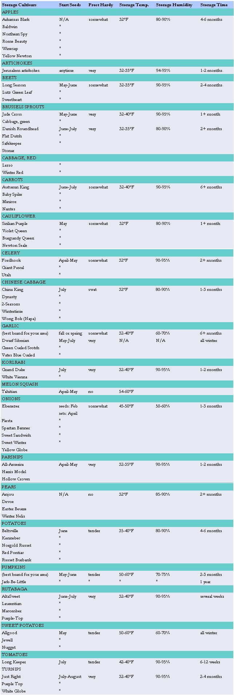

Garden & Yard
Extending the fresh fruit and vegetable season.
Those of us who enjoy eating fruit and vegetables straight from our orchards and gardens dread winter when there's no fresh produce to pick. Sure, we can dry, pickle, can, and freeze summer's bounty, but it's nice to have something fresh once in a while. And sure, we can buy "fresh" produce at the grocery store, but it just doesn't taste the same. Happily, there's another alternative. By judiciously selecting the varieties we grow, and by learning to handle and store them to maximize their shelf life, we can enjoy fresh produce from our gardens well into winter and maybe into spring.
Selecting and Growing
Selecting the right fruits and vegetables doesn't just involve growing foods that traditionally store well (such as apples and potatoes), but growing cultivars that ripen late and have especially long shelf lives (such as Winesap apples and Kennebec potatoes). Some nursery catalogs offer storage information in their seed and plant descriptions. The accompanying chart lists varieties that are well known for their good storing qualities.
Due to variations in climate and soil, cultivars perform differently in different areas. McIntosh apples, for example, generally don't store as well as the varieties listed in the chart, but those grown in New England store better than McIntosh grown elsewhere. If you're fond of a particular variety, try storing a sample to see how it holds up. Planting times and growing conditions will also affect storage quality. Most vegetables that store well grow best in cool weather. Unless you're growing something that needs a long season (like melon squash), start seeds as late as possible. Plants that mature during cool autumn weather produce fruit with tougher skins and better keeping qualities. Go easy on the fertilizer-for winter storage you want fruit that's firm and solid, not mushy.
Picking and Curing
With the exception of tomatoes and pears, storage produce should be fully mature and prime for serving. No fruits or vegetables should have insect damage or cuts and bruises caused by rough handling during harvest. Some things (including pears and squash), are easily damaged by frost and should be harvested at the slightest hint of freezing weather. Others (like Brussels sprouts and parsnips), improve after exposure to a light frost, because freezing converts their starches into sugars. Potatoes and squash keep longer if they're cured to toughen their skins. No produce should be washed-this encourages decay. Instead, harvest root crops when the soil is dry and gently brush off excessive dirt, taking great care not to break through skins.
Storing
Some vegetables can be left in the ground until the soil freezes hard. Some can be left in the ground all winter and harvested after the spring thaw. Some must be brought in and stored in a cool, dry place, others must be stored in a cool, humid place. Your produce will last longer if you combine foods with similar preferences in temperature and humidity, as indicated in the chart. An inexpensive thermometer/hygrometer will help you find or create the ideal storage spot.
At temperatures higher than those recommended, produce deteriorates more quickly; humidity is equally important.
Most fruits and vegetables contain approximately 85% water, and loss of moisture through evaporation causes shriveling. Vegetables that are especially prone to drying should be packed in damp (but not wet) sand or sawdust, or replanted in buckets of moist soil or sand so their roots can continue drawing up the moisture they need.
Root cellars-which take advantage of the earth's natural coolness and moisture-are popular in areas where the frost line is deep. If you have an unfinished basement that's cold and damp, commandeer a corner for your root cellar. If your basement is cold but dry, increase humidity by leaving a bucket or two of water among your vegetables; if your basement tends to be on the warm side, you can still store produce that prefers warmer temperatures. Try sweet potatoes, pumpkins, and squash.
In areas where the frost line isn't very deep, produce can be stored in shallow outdoor pits. Dig the pit on a gentle slope, one or two feet below the frost line. Add a trench around the pit to divert runoff. Heap loose soil in the center of the pit and line the pit with straw, bringing the straw well over the sides. Mound produce in the center, bring the straw together over it, and tie the straw together at the center to form an exhaust chimney. Cover the whole thing with loose soil and add a sheet of tin or roofing felt to keep out heavy rain. Then, when you want to retrieve a potato or cabbage, lift the cover and reach through the chimney.
Stored produce needs ventilation to bring in fresh air. If you're storing apples, pears, or tomatoes, ventilation also removes the ethylene gas naturally produced as they ripen. The warmer the temperature, the more rapidly gas is produced and the faster foods ripen; the cooler the temperature, the slower they ripen. Bagging ethylene producers in plastic slows the rate of ripening (by limiting oxygen). To hasten ripening of other produce, store an ethylene producer alongside. To slow ripening, separate them.
SELECTION HINT
When it comes to selecting the right fruits and vegetables for your garden, choose cultivars that ripen late and have especially long shelf lives.
Main Crops
Celery is one of those vegetables you can keep in the garden right up until the ground freezes hard. Gradually bank soil around plants so they're covered by the time the first hard frost hits. The banked soil, besides protecting the plants, also blanches them so they'll taste somewhat milder. (Unfortunately, they'll also be lower in vitamins.) When frost does threaten, cover the mounded row with a thick layer of mulch. Before the ground freezes hard, dig up and replant celery, closely spaced, in a bucket with a shallow layer of damp sand or soil in the bottom. Keep the sand or soil moist, using a length of hose to place the water so you won't wet leaves and stalks, causing them to rot. Store celery separately from vegetables that give off strong odors, such as cabbages and turnips.
Garlic is the cat of the vegetable world-it does what it darn well pleases. Grow the variety that does best in your area, and plant it at the best time for your area. We break up one or two of our best bulbs and replant the cloves right after the fall harvest. We plant more cloves in spring, when our stored garlic starts to sprout. Some years the fall-planted cloves grow best, other years the spring-planted crop prevails. Harvest garlic as soon as the tops die back. Dig up the bulbs, shake off loose soil, and clip off the roots. Cure bulbs in the sun for three or four days to toughen skins. Stored garlic needs good air circulation, so place bulbs in open plastic crates or hang them in mesh or net bags and store them in a cool, dry place. Some people claim to braid garlic for storage, but our bulbs always fall off the braid.
Jerusalem artichokes can be mulched heavily and harvested from the garden until the ground freezes hard. To serve crisp chokes during winter, bring in tubers before the soil gets too hard to dig, taking care not to break through skins. Store chokes in buckets of damp sand or sawdust.
Onions should be lightly stepped on or knocked down with the back side of a rake when the tops turn yellow and half have fallen over. Leave the bulbs in the ground to dry for another week, then dig them and cut the tops to within one inch. Sort out damaged bulbs and any with thick necks; they won't keep as well as thin-necked bulbs. Spread the bulbs on screens to cure in the sun for a day or two. Move the screens to a dry, shady, airy place and con tinue curing for three weeks more. Onions need good air circulation during storage. Place them in open plastic crates or hang them in mesh or net bags and store them in a cool, dry place. Some people like to braid their onions and cut off bulbs as they're needed. In general, yellow onions store better than whites or reds.
Potatoes store best if they're planted late enough in the season so that cool autumn nights help them to store starch before the harvest. Dig potatoes when their tops die back. In some areas, they may be left in the ground for as long as six weeks. But here in Tennessee, ours rot if we don't harvest them right way. Cure potatoes by spreading them on screens in a dry, dark, warm (60°F to 75°F) place for two weeks, while skins toughen and nicks heal over. Potatoes need plenty of ventilation during storage, so don't pile them in great heaps. Keep them in a dark, dry place where the temperature does not fall below 35°F, otherwise starch will turn to sugar, making your potatoes taste funny (you can reverse the process by holding them at room temperature for a week before cooking them).
Sweet potatoes are more popular here in the South than Irish potatoes. Traditionally, most houses here don't have cellars, and sweet potatoes keep better in the warm, dry air produced by winter wood stoves (indeed, sweet potatoes stored at too cold a temperature develop black spots and corky areas). Dig sweet potatoes when vines die back or before fall rains make the soil soggy, whichever comes first. If frost kills the vines, dig the tubers right away. Let them lie on the ground for a half day to air dry. Then sort out seriously damaged tubers, spread the rest on screens, and cure them in a dark, warm (80°F to 85°F) place for two weeks, during which minor breaks will heal over. Before storing the tubers, gently brush away loose soil, taking care not to break through the skins.
Some people wrap each tuber in newspaper, others pack them in cartons separated by dry sawdust. We gently stack ours in open bins, and they last until spring. Because they need a good amount of ventilation, we don't pile them in great heaps. In our experience, larger tubers store longer, so we eat the smaller ones first.
Tomatoes are not usually thought of in terms of storage, but you can extend the fresh tomato season by 12 weeks or more if you grow Long Keeper, developed specifically for winter storage. Stored tomatoes don't taste as good as fresh ones, but they're a darn sight tastier than hothouse tomatoes from the store. If you already have a favorite tomato growing in your garden, you still have a few tricks to extend your season. Begin by pinching out blossoms and small fruit a couple of weeks before the expected first frost, which helps the remaining fruit mature more rapidly. Because tomatoes touched by frost may not ripen, protect plants with sheets when light frost threatens. Before a hard frost, pick unblemished tomatoes of at least three-quarters full size, with shiny skins.
Set the tomatoes on a shelf, away from direct sunlight, where the temperature is between 65°F and 70°F To trap ethylene gas and hasten ripening, cover some tomatoes with newspaper; lift the paper daily and remove any that have ripened or are rotting. Your tomatoes should ripen in one to two weeks. To slow ripening by an extra week, store some tomatoes at 55°F to 60°F Another way to store tomatoes is to pull up the whole plant, roots and all, and hang it in your garage or basement away from sunlight, where tomatoes will continue to ripen for four to six weeks. Ripened or rotting tomatoes fall with a splat, so check your plants frequently or spread newspaper on the floor to simplify cleanup.
Tomatoes store best if they come from young, rather than almost played out, plants. To ensure that you have maturing tomatoes on the vine in late fall, start new plants in mid or late summer by cutting six-inch suckers (or the plant's top 12") from spring plants. Remove lower leaves and encourage roots by setting cuttings in water for a few hours or dusting them with a rooting hormone before planting them.
Winter squash and pumpkins are all reasonably good keepers, but butternut cultivars (All Season, Hercules, and Waltham) and sweet potato cultivars (Delicate and Sweet Dumpling) keep best of all. Spaghetti squash is next best, with pumpkins running close behind, although pepos or true pumpkins don't keep quite as well as maximas. Stored on hay bales in our barn, maximas last into April. Acorn squash (especially after the skin turns orange) is the least easy keeper and requires a lower temperature than other squash.
Plant squash and pumpkins late so they won't mature until the weather cools. To hasten ripening, pinch out plant leaders, flowers, and small fruit three weeks before expected frost. Squash exposed to frost doesn't keep well, so harvest before a hard frost. Store fruit with two-inch stems and skin so tough you can't punch through it with a fingernail.
Cure all varieties except acorn and sweet potato cultivars by leaving them in the sun for 10 days, covering them if rain or frost threatens. Stored squash needs good air circulation, so place fruit in a single layer with space between them, not in heaps. Although squash and pumpkins keep well at lower humidity and higher temperatures than other produce, they will get stringy if stored where it's too warm.
Root Crops
Root crops such as beets, carrots, and turnips tend to dry out during storage unless kept in damp sand or sawdust. Dig roots, brush off loose dirt, twist off tops to within one inch, and pack roots in five-gallon buckets, one variety per bucket. Set the cover lightly on top of the bucket to slow evaporation. Pack only roots that aren't damaged during harvest, and store them in a place that's cold (32° to 40°F) and humid (90% to 95% relative humidity).
Beets developed for storage (such as Long Season and Lutz Green Leaf) won't get woody if you leave them in the ground; others should be harvested before they get much over two inches in diameter. Pull up beets before a hard frost and twist off the tops but leave the bottom root.
Carrots in the garden can be mulched and harvested until the ground freezes hard. If you wish, you can leave them in the ground until the spring thaw, covering them with one to two feet of mulch before the ground starts to freeze. Otherwise, dig them for winter use and store them away from ethylene producers, or they may turn bitter.
Kohlrabi, rutabaga, and turnips are brassicas grown for their bulbous roots rather than their leaves. Kohlrabi tastes best when bulbs are no more than about three inches across. Rutabaga tastes mildest when bulbs are no more than two inches across, and sweetest after a couple of light frosts. Turnips taste mildest when bulbs are four to five inches across, and sweetest after a couple of light frosts. Harvest all three before a heavy frost.
Parsnips, like carrots, can be harvested and stored (away from ethylene producers so they won't turn bitter) or left in the garden. If you leave some in the ground to enjoy after the spring thaw, harvest them when small leaves poke through the soil, or they'll soon get tough.
Salsify also tastes best after a couple of light frosts. It may be harvested and stored the same as carrots and parsnips but won't keep quite as long.
Winter radishes may be left in the ground, well mulched, or stored in damp sand or sawdust. Left uncovered after harvest, they shrivel fast.
Cole Crops
Storing brassicas will give you something green to eat during winter. The best keepers are brussels sprouts, cauliflower, head cabbage, and Chinese cabbage.
Brussels sprouts are short-term keepers, but at low temperatures can be kept for a month or more. Leave plants in the garden until temperatures dip into the 20s. The sprouts, in fact, taste best after a frost. When serious cold weather threatens, uproot entire plants and either hang them upside down in the basement or replant them in buckets of moist soil. Picked sprouts may be kept in perforated plastic bags (the kind carrots are sold in), and stored for three weeks or longer.
Cabbages with solid, firm heads will keep for two months or more. Split heads don't keep well, though, so in rainy weather twist heads (or push a shovel into the ground on two opposite sides of each head) to break off feeder roots so that they can't draw in any excess moisture. Grow a winter cultivar and harvest just before heads reach full maturity-right before their outer leaves start to pale. Pull up plants with roots intact and trim off large, loose leaves.
Heads may be stored in a variety of ways: hang them from strings tied around the roots; lay them on a dirt floor, root side up, and cover them with loose soil; arrange them in a circle in a pit, so that each head covers the root of the next; wrap heads in newspaper and then pack them into crates; pack heads in layers with straw between them; or space heads along a shelf. Cabbages give off a pungent odor, so you might not care to store them in the house or with nonbrassicas, which could take on a strange taste.
Cauliflower does not keep well if the storage temperature is warmer than the ideal. Purple-headed cultivars store best, since they mature later in fall than white varieties. Uproot plants with solid heads and store them any number of ways: hung by the roots, laid on shelves, or replanted in buckets of moist soil or sand. Heads will keep best if they're wrapped in plastic and stored in a cool, humid place.
Chinese cabbage does not keep quite as well as regular cabbage, but it is nice to have for variety. Uprooted and stored in a straw-lined pit, it'll keep for about one month. Replanted in buckets of moist sand or soil and stored in a cool, humid place, chinese cabbage keeps for three months or more, if you don't wet the crowns during watering. Store mature, solid heads, harvested before a hard frost (mild frost improves the flavor).
Fresh Fruit
Fresh fruit is a real treat during the winter, but most fruit doesn't store well. Exceptions are some varieties of apples and pears, and melon squash grown in your garden.
Apples harvested from the tree keep best, but we have sorted through windfalls of apples and stored the least damaged ones for several months. Stored apples must be ripe. If they're underripe, they'll go bad fast; if overripe, they'll turn soft.
Apples harvested in early and mid-fall, such as Cortland and Grimes Golden, keep for two months at best, but the late fall apples listed in the chart keep much longer. Many antique varieties are also good keepers. Those in our orchard include Ben Davis, Pound Apple, Roxbury Russet, Spitzenburg, and Winter Rambo.
For any cultivar, the higher the temperature, the shorter the shelf life. Stored at temperatures close to 32°F, late-fall apples will keep all winter. At temperatures as high as 40°F, they'll get soft in a month or two. If apples shrivel fast, either your temperature is too high or your humidity too low. Don't store apples in great heaps, or they'll bruise and rot. We wrap ours individually in newspaper and sort through them often looking for soft ones. If they're not too far gone, we use soft ones for baking or in pancakes.
Pears, unlike apples, don't taste as good if allowed to ripen on the tree; tree ripening causes gritty texture. Pick pears just as their skins start turning yellow and the fruit drops easily into your hand when you push up on it. Wrap pears individually in newspaper and store in a cool place, keeping the layers fairly shallow to avoid bruising. Pears won't ripen during storage, so bring them into a warm room to ripen for several days before you plan to serve them.
Melons, of course, do not store well, but a certain variety of winter squash, appropriately called "melon squash," has the taste and texture of a crisp, firm melon. Try it if you can squeeze six to seven months out of your growing season (get a jump on the season by starting seeds indoors). Harvest melon squash when frost threatens; it will ripen, darken in color, and sweeten during storage.
Resources
The Harvest Gardener by Susan McClure (Garden Way, 1993) is a complete guide to growing and harvesting vegetables and preserving them in a variety of ways including root cellaring.
Root Cellaring by Mike and Nancy Bubel (Rodale, 1979) includes everything you need to know about growing and harvesting food for storage, including details on how to build a variety of root cellars.
Among seed catalogs that indicate storage cultivars are Gurney's, 110 Capital Street, Yankton, SD 57079; Henry Fields, 415 North Burnett, Shenandoah, IA 51602; Seeds Blum, Idaho Stage City, Boise, ID 83706; and Shumways, P.O. Box 1, Graniteville, SC 29829.
|
 |
|
|